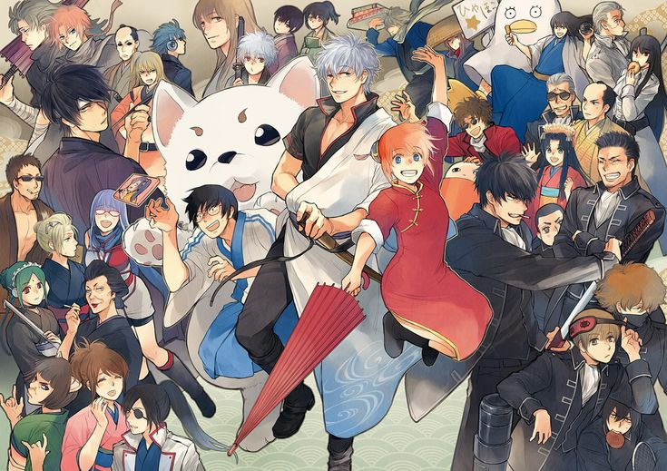
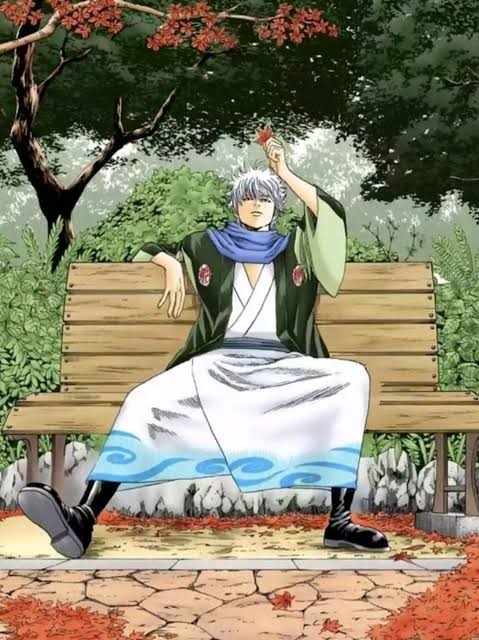
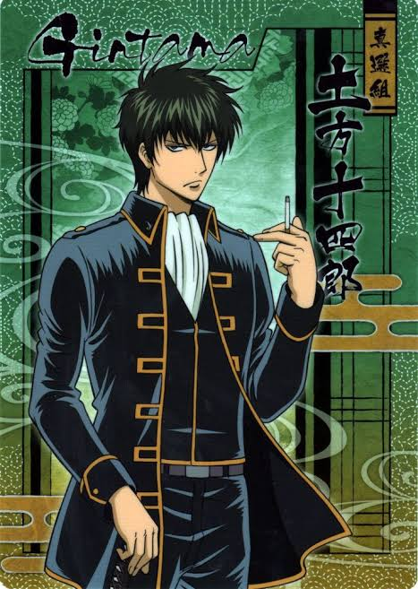
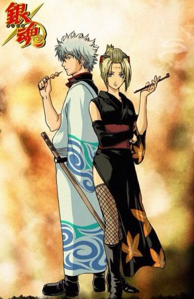

I'm Lian Albert N. Laguitan, a 3rd-year BSCS student in section BSCS31A. I started with plain HTML, links and lists. Since then I've moved through semantic tags, flexbox, JavaScript events, promises, jQuery, AJAX and dark mode. This site collects all of it in one place.
Name
Lian Albert N. Laguitan
Course
BSCS
Year level
3rd Year
Section
BSCS31A
School activities
Hover a card and the rest blur out. Click a card to open the page I made for that activity.
My first pages: Home, My Information, Journal and Others, linked by a menu. Practiced headings, images, and ordered, unordered, definition and nested lists.
Selected page elements by id and reacted to mouseover, mouseout, click, double click and press and hold, then showed the event in a text line. HTML, CSS and JavaScript are in separate files.
Built a dashboard loader with three promises that resolve at different times. Promise.all waits for every one before showing "Dashboard Ready!". HTML, CSS and JavaScript are in separate files.
Styled table rows with jQuery and reacted to click, double-click, mouse enter and leave, focus, blur and change. Hid and showed a table. The JavaScript lives in its own file.
Added dark and original mode buttons, plus a student form that adds new rows to a table.
Activity log
Every activity so far
Activity
Practiced
Tools
First Met
Links, images, lists
HTML
Semantic Tags
Page structure, external CSS
HTML, CSS
Span with Header and Footer
Inline span styling, header, footer
HTML, CSS
Flex Activity
Flexbox layout, forms
HTML, CSS
Introduction to JavaScript
Events, getElementById, innerHTML
JavaScript
Promise Resolve
Promises, resolve, Promise.all
JavaScript
Table Design
Events, row colors, hide and show
jQuery
AJAX Sample
Requests and ready states
JavaScript
Dark Mode
Class toggling, dynamic rows
jQuery, CSS
My Gintama corner
Gintama follows Gintoki Sakata, a lazy samurai who runs the Yorozuya odd-jobs shop in an Edo invaded by aliens. It switches between slapstick comedy and serious battles without warning, and that is why I love it.
Timeline
Hideaki Sorachi's manga begins in Weekly Shonen Jump.
The anime premieres, produced by Sunrise.
First movie, The Movie: Benizakura.
Second movie, The Movie: The Final Chapter: Be Forever Yorozuya.
The Silver Soul Arc anime adapts the final story.
The manga ends after 704 chapters.
The last movie, Gintama: The Final, wraps up the anime.

My favorite characters

Gintoki Sakata
A silver-haired, sweet-toothed slacker who runs the Yorozuya and acts like he’d sell his soul for a parfait until someone needs saving, and he suddenly turns into the most reliable samurai in Edo..

Character art here
Toshiro Hijikita
The Shinsengumi’s demon vice-commander: a mayo-obsessed, chain-smoking hardass whose iron discipline hides a loyalty so absolute he’d die before letting his comrades fall.

Character art here
Tsukuyo
Yoshiwara’s Flower of the Underworld: a kunai-wielding, ice-cold guardian who hides a scarred past and a fiercely protective heart behind a glare that could cut steel.
My favorite episode
Episode 305 Sworn Enemy in the Shogun Assassination Arc.
Because Pain can either destroy you or make you a protector.
The episode is a meaning in my life teaches that while you cannot stop bad things from happening,
you get to choose how you react: you can let grief turn into anger and destroy your world, or you can choose to carry the scars and protect the people around you.